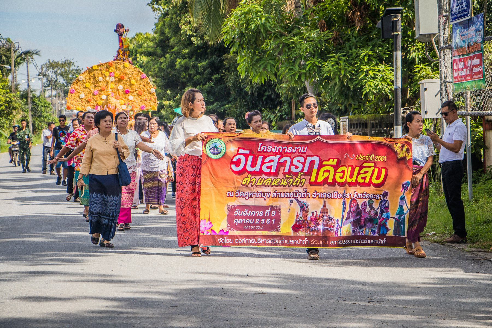

ประเพณีสารทเดือนสิบ (ชิงเปรต)

ประเพณีสารทเดือนสิบ (ชิงเปรต) สำหรับเทศกาลบุญสารทเดือนสิบ มีคติความเชื่อว่าในเวลา 15 วัน นับตั้งวันแรม 1 ค่ำเดือนสิบ หลังจากประตูโลกหลังความตายเปิดเชื่อมกับโลกมนุษย์ผู้เป็นใหญ่จะปลดปล่อยดวงวิญญาณกลับมาสู่โลกมนุษย์มารับส่วนบุญ จะถือเป็นวันรับตายายวันแรก และในวันสุดท้ายคือวันแรม 15 ค่ำเดือนสิบ จะเป็นวันทำบุญเลี้ยงตายายและส่งตายายกลับ หลังจากได้เวลาที่ดวงวิญญาณทั้งหลายจะต้องกลับสู่โลกหลังความตาย กลับไปชดใช้กรรมที่เกิดจากการกระทำบาปเมื่อคราวยังมีชีวิตตามโทษานุโทษในโลกหลังความตายจนกว่าจะได้รับอนุญาตให้กลับมารับส่วนบุญใหม่ในเดือนสิบของปีถัดไป
ย้อนกลับ